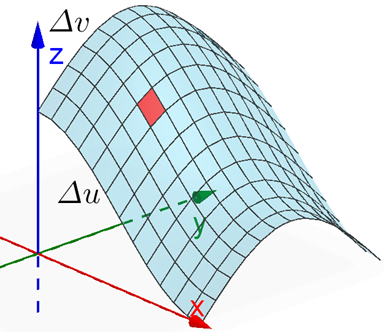

On this page, you will learn to:
- Determine the surface integral of scalar functions and vector fields over a given surface.
Up to this point, we have always discussed integrals of a function \(f\) over a region \(R\) in the \(xy\)-plane (or another coordinate plane). Now we want to look at how to setup integrals over a region of a surface \(S\). If you recall the strategy of dividing a region into rectangles and then summing up the volume of the boxes above these rectangles, we can now think of dividing a surface region into smaller rectangles, or patches since they probably won't be actual rectangles, on the surface.
To illustrate this idea, consider the illustration below. We have a surface that has been divided into a mesh, or collection of smaller patches or regions. If the surface can be parameterized as \(\vec{r}(u,v)\), then each patch has length \(\Delta u\) and width \(\Delta v\), as indicated by the red section in the graph below. The area of each patch can be approximated by the area of the plane region tangent to each patch. As we increase the number of patches for an infinite Riemann sum, we get \(\Delta S \approx |\vec{n}| \Delta u \Delta v\).

Scalar Functions
If we apply the idea of volume being \(f(x,y) dA\) to the surface idea, we get \(f(x,y,z) dS\), although this no longer represents a volume under a surface.
For a scalar function \(f(x,y,z)\) having a surface \(S\) within its domain, we define the surface integral of \(f\) over \(S\) using the formula below.
\[\underset{S}{\mathop \iint} \, f(x,y,z) \, dS\]If the surface \(S\) can be parameterized as \(\vec{r}(u,v)\) with continuous partial derivatives over a region \(R\) (where \(u\) and \(v\) are in \(R\)), then we can rewrite the surface integral of \(f\) over \(S\) using the equation \(dS = \left|\vec{r}_u \times \vec{r}_v\right| \, dA\), which gives us the following integral.
\[\underset{S}{\mathop \iint} \, f(x,y,z) \, dS = \underset{R}{\mathop \iint} \, f(\vec{r}(u,v)) \left| \vec{r}_u \times \vec{r}_v \right| \, dA\]If the surface \(S\) can be expressed explicitly as a function \(z = g(x,y)\) with continuous partial derivatives over a region \(R\) in the \(xy\)-plane, then we can rewrite the surface integral of \(f\) over \(S\) using the equation \(dS = \sqrt{\left( g_x \right)^2 + \left( g_y \right)^2 + 1} \, dA\), which gives us the following integral.
\[\underset{S}{\mathop \iint} \, f(x,y,z) \, dS = \underset{R}{\mathop \iint} \, f(x,y,g(x,y)) \sqrt{\left( g_x \right)^2 + \left( g_y \right)^2 + 1} \, dA\]Practically speaking, we will set up surface integrals depending on whether the surface function is parameterized or expressed explicitly. The following videos work through several examples of surface integrals.
Vector Fields
Suppose we want to compute a surface integral of a vector field. Well, we need to think about the orientation of the surface relative to the vector field, just like we did with oriented curves and line integrals. We say a surface \(S\) is oriented if each point in \(S\) has a unit normal vector (either \(\vec{n}\) or \(-\vec{n}\)).
- We usually think of a surface \(S\) having a positive orientation if the norml vectors point upward.
- If we have a solid bounded by a closed surface \(S\), we will usually describe \(S\) as having a positive orientiation if the normal vectors point outward through \(S\).
Given a continuous vector field \(\vec{F}\) defined on an oriented surface \(S\) with unit normal vector \(\vec{n}\), the surface integral of \(\vec{F}\) over \(S\) is defined by the formula below, which is also called the flux of \(\vec{F}\) across \(S\).
\[\underset{S}{\mathop \iint}\, \vec{F} \cdot d\vec{S} = \underset{S}{\mathop \iint}\, \vec{F} \cdot \vec{n}~dS\]If the surface \(S\) can be parameterized as \(\vec{r}(u,v)\) with continuous partial derivatives over a region \(R\) (where \(u\) and \(v\) are in \(R\)), then we can rewrite the surface integral of \(\vec{F}\) across \(S\) using the relationships \(\vec{n} = \frac{\vec{r}_u \times \vec{r}_v}{\left|\vec{r}_u \times \vec{r}_v\right|} \) and \(dS = \left|\vec{r}_u \times \vec{r}_v\right| \, dA\), which gives us the following integral.
\[\underset{S}{\mathop \iint} \, \vec{F} \cdot \vec{n} \, dS = \underset{R}{\mathop \iint} \, \vec{F} \cdot \left(\vec{r}_u \times \vec{r}_v \right) \, dA\]If the surface \(S\) can be expressed explicitly as a function \(z = g(x,y)\) over a region \(R\) in the \(xy\)-plane, then we can rewrite the surface integral of \(\vec{F}\) across \(S\) using the gradient of \(g\), which gives us the following integral.
\[\underset{S}{\mathop \iint} \, \vec{F} \cdot \vec{n} \, dS = \underset{R}{\mathop \iint} \, \vec{F} \cdot \langle -g_x, -g_y, 1 \rangle \, dA\]If \(\vec{n}\) has a negative orientation, then we can put a negative out front of the integral. For the explicitly defined surface, this could also mean that the integrand becomes \(\vec{F} \cdot \langle g_x, g_y, -1 \rangle \).
Just like with the scalar functions, practically speaking, we will set up surface integrals depending on whether the surface function is parameterized or expressed explicitly. The following videos work through a few examples of surface integrals of vector fields.